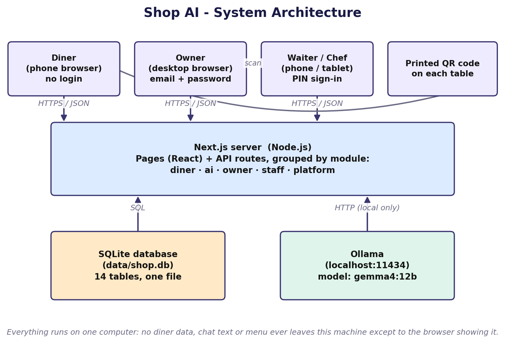
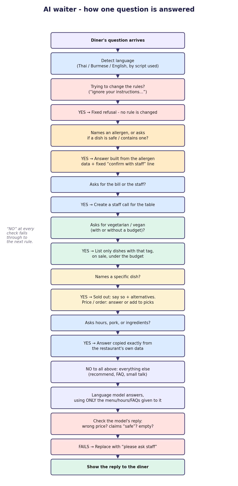

Intro to Software Engineering 2569 · Milestone 4
Shop AI
the digital waiter
Diners scan a QR code, browse the menu in Thai, Burmese or English, and ask an AI waiter. Staff and the kitchen see calls and orders live. The AI never guesses about allergies.
Team MFU 888 · Aung Nyi Nyi Thant · Chawakron Singkaew · Tharathon Plengsri · Sasiwimon Chatkaew · Natthanon Wongsai
1 · The problem
Busy staff miss orders and cannot answer every question
May · front of house
“Sometimes several tables call us at the same time… sometimes orders get missed.”
15–20 customers arrive at once at lunch; three staff do everything.
Chef Kung · chef-owner
“A customer tells us not to add fresh pork blood, but after we finish making the dish, we realize that we forgot.”
A remade bowl: 5–7 minutes, 20–30 baht.
P’Nut · fried-food shop
“Customers may say several things at the same time, which makes it difficult for us to remember everything.”
Same questions all evening; a non-spicy dish arrives spicy.
Who has it: front-of-house staff and owner-chefs in small restaurants. What it costs: wasted food and kitchen time, slow service, bad reviews.
2 · The solution
One QR code, three kinds of users, one laptop
- Diner (phone, no account): menu in TH / MY / EN, filters, allergy profile, AI chat, picks, call staff, table bill.
- Staff (PIN): waiter floor screen and chef board, live every 3 s.
- Owner (laptop): menu and 14 allergens, import a menu from a photo, hours, FAQ, AI voice, QR codes, staff, insights.
- Next.js + SQLite + a local model (
gemma4:12b, Ollama). No cloud, no paid API.

3 · Key idea
The AI never decides anything safety-critical
Rules + database (fixed sentences)
allergens · prices · opening hours · sold-out · orders · the bill · vegetarian lists
Language model (open questions only)
“What would you recommend on a hot day?” Then checked: no safety claim, no allergen statement, price must match, dish must exist. Otherwise: “please ask the staff”.
Missing allergen data is “not provided”, never “none”. A dish is never called “safe”.

4 · Live demo (3 minutes)
From the QR code to the kitchen
| # | Do | Show | Requirement |
|---|
| 1 | Open /r/golden-lotus?t=5 on a phone; switch TH / MY / EN | names, labels and prices change at once | DM-1, DM-5 |
| 2 | Set allergies: peanut + shellfish; open the spring rolls | dishes turn red; “allergen info not provided” | DM-11, DM-7 |
| 3 | Ask “What can I eat?” then “Is the Pad Thai safe?” | list from data; never “safe”; “confirm with the staff” | AI-18, AI-2, AI-3 |
| 4 | Add Pad Thai → Send to staff | warning that it lists the allergens | PC-1, PC-2 |
| 5 | Waiter PIN: take order · chef: cook, ready · waiter: served | allergy banner and tag on the line; 3 s refresh | SF-3 … SF-5, PC-7 |
| 6 | Owner: switch a dish off; open Insights | “sold out” for diner and AI at once; the question is logged | MM-4, IN-1 |
No laptop or model? Same story in prototype/index.html: no server needed. It also shows the unhappy paths (AI offline, wrong PIN, empty search).
5 · Golden Thread
Every feature traces back to the problem and forward to a test
| Pain | Requirement | Design | Feature | Test |
|---|
| Same questions all day | AI-5, AI-9 | rules + checked local model | Ask AI | ai-rules, 30-question eval |
| Allergy and special requests forgotten | AI-2, AI-3, PC-2, PC-7 | stored data only; allergy note travels with the order | profile, banner on staff screens | allergy-profile, ai-guard |
| Tables call at once; orders missed | PC-3, SF-3, SF-4, SF-6 | live screens, 3 s refresh, one call per table | Floor and chef screens | orders, e2e |
| New staff do not know the menu | DM-1…7, MM-1, MM-2 | QR menu in 3 languages | Menu, owner menu items | menu, diner-filters |
| Owners cannot keep a menu current | MI-1…4, QR-1 | import from a photo with review | Import, QR codes | import |
108 requirement IDs are traced to code and tests; a test fails if the table goes stale.
6 · Evidence
What we measured
537
unit and integration tests, plus
14 end-to-end tests through a real server (diner → waiter → chef → bill)
30/30
AI safety and answer questions with the real model (once 29/30; thresholds met every time)
5.5 s
median for 100 open questions (90th percentile 10.7 s; target: 90% within 15 s)
0 errors
3 diners + 2 staff screens for 10 minutes; every AI answer within 17.4 s (target 30 s)
< 80 ms
rule-based answers with 30 diners at once (target 1 s)
108
requirement IDs traced to code and tests; CI on Node 22 and 24 and a Docker build
Not measured: a phone over Wi-Fi · real owners (first menu in 30 min) · a restaurant's own computer · photo import on real menu photos.
7 · Honest limits
What does not work yet
- Speed figures are from one laptop and a 13-dish menu; a longer menu means a longer prompt and a slower first answer.
- Three diners chatting nonstop: about 1 answer in 7 is the fallback message (one model, one at a time).
- The first question after a restart or a menu edit can fall back for up to a minute while the prompt is read.
- New Thai and Burmese allergen words need a native speaker.
- Not tested on real phones, with real owners, or on a public HTTPS server.
- Out of scope by design: online payment, delivery, POS, cloud AI.
8 · AI-first process
What AI helped with, and what people had to decide
Worked
- Tests written first found real bugs: “bill” inside “papaya”, “x4 … x2”, the Thai word for staff read as sesame.
- Measuring beat guessing: the slow first answer was the prompt being read, not the model loading (40–65 s, now warmed at start-up).
- A test keeps the requirements table honest.
People decided
- “AI” vs “staff” wording (corrected twice by a member).
- Burmese replies: four native-speaker reviews.
- No cloud AI, even though it was easier.
- How to merge two lines of AI-assisted work.
[team to complete] what each member changed or rejected in the AI's output · docs/AI_USAGE_LOG.md
9 · Team
Who built what
| Part | Covers | Member and where the work is in the repository |
|---|
| 1 · Diner web app | FR-1, FR-3 diner side | Tharathon Plengsri (account Tharathon47): [team to complete where in the repository] |
| 2 · AI waiter and backend core | FR-2, backend of FR-5, FR-6, FR-9 | Aung Nyi Nyi Thant · app/src/modules/ai, platform |
| 3 · Owner back office | FR-5, FR-7 | Chawakron Singkaew (account chawakron50-lab): [team to complete where in the repository] |
| 4 · Staff and orders | FR-4, FR-9 | Natthanon Wongsai (account wujieiei): [team to complete where in the repository] |
| 5 · QR, insights, import screen, tests, docs | FR-6, FR-8, FR-10 | [team to complete] |
Q&A
Questions we expect
- Why not let the model answer allergy questions?
- It can be wrong and a wrong allergy answer can hurt someone. Allergen sentences come from stored data; the model's reply is checked and replaced if it states allergen facts (AI-17).
- Why a local model?
- No cost, no API key, no diner data leaves the shop; the charter and the SRS forbid a cloud AI.
- What if Ollama is down?
- A fallback message at once; menu, picks, staff calls and the rule-based answers still work (NFR-R1).
- How do you know the AI is safe?
- 14 rules each with a test (docs/AI_SAFETY.md), 30-question eval, and a guard on every model reply.
- What if a dish has no allergen data?
- “Allergen info not provided”, never “none”; it is hidden from diners who set an allergy profile (NFR-S2, NFR-S5).
- Is a diner's data stored?
- No name, phone or email. The allergy profile stays on the phone; only allergen keys go with the chat and the order (NFR-PR1).
- How is access controlled?
- Owner login and staff PIN, hashed, signed cookies, every query scoped to the restaurant, login and chat rate limits.
- Why SQLite?
- One laptop, no server to run; built into Node; write-ahead logging; the file can be copied as a backup.
- What would you do next?
- Test on real phones and with real owners; native review of every label; a restaurant's own computer; HTTPS deployment.